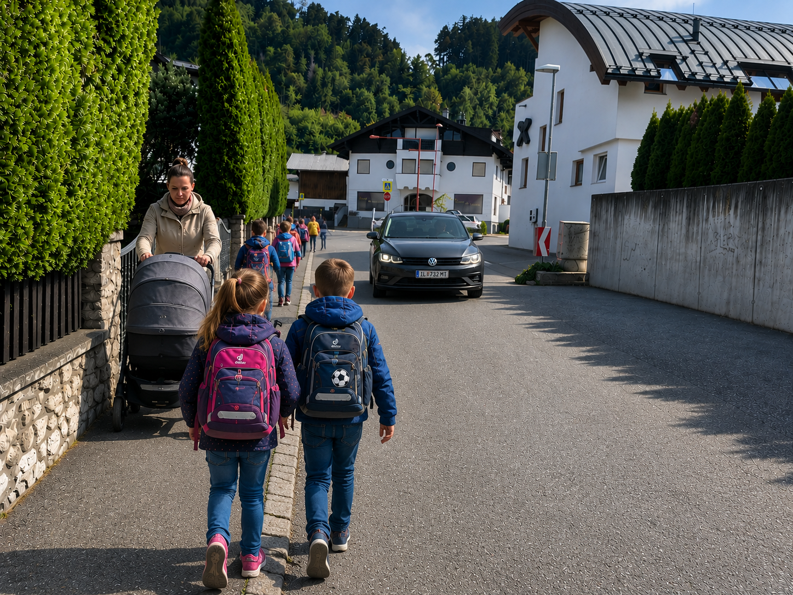
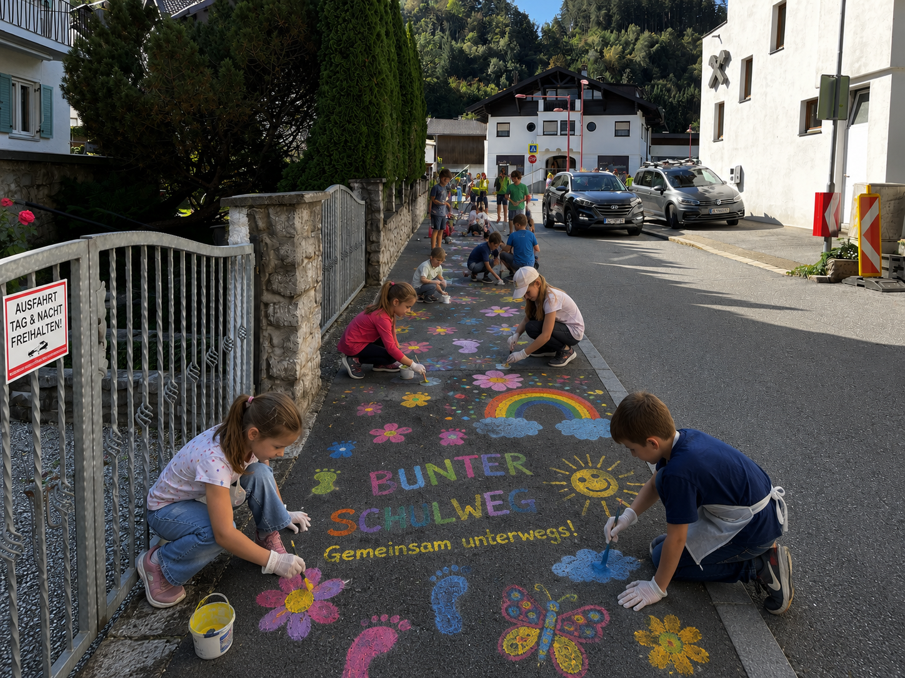

[26.07.2026]
Dieser Schulweg wird bunt 🌈🌼👣 🎨
Mit Beginn des Schuljahres 2026 führt der Schulweg vieler Kinder für die Dauer des Schulumbaus über die Kranebitterstraße. Der Radstammtisch Völs möchte gemeinsam mit Volksschule und Gemeinde diesen Weg sicherer, sichtbarer und kinderfreundlicher gestalten.

Projektidee
Unter dem Motto „Wir gestalten unseren Schulweg selbst.“ bemalen die Kinder der Volksschule Völs den neuen Schulweg entlang der Kranebitterstraße mit Straßenfarben.
Die Gemeinde markiert zuvor den 2 Meter breiten Gehsteigbereich mit einem weißen Strich. Der neu entstandene Gehsteigbereich wird anschließend von den Kindern mit Blumen 🌼, Regenbogen 🌈, Fußspuren 👣 , Handabdrücken, Schmetterlingen 🦋 und vielen weiteren Motiven gestaltet. Dadurch entsteht ein farbenfrohes Straßenbild, welches den Schulweg klar sichtbar für alle macht. Kinder erleben ihren Schulweg bewusst und gestalten ihn selbst. Gleichzeitig wird für alle Verkehrsteilnehmenden sichtbar, dass Straßen nicht nur Verkehrsflächen sind, sondern auch Orte der Begegnung und des Miteinanders sind.
Die Aktion ist auch ein idealer Beitrag zur Europäischen Mobilitätswoche 2026, deren Ziele sichere Schulwege, aktive Mobilität und lebenswerte Gemeinden sind.
Bereits im Rahmen der Europäischen Mobilitätswoche 2025 hat der Radstammtisch Völs gemeinsam mit über 100 Völserinnen und Völsern einen symbolischen 2 Meter breiten roten Teppich entlang der Kranebitterstraße ausgerollt. Damit wurde eindrucksvoll gezeigt, wie ein ausreichend breiter Gehsteig die Sicherheit und Attraktivität des Fußverkehrs verbessern kann.
Aktion „Roter Teppich für die Kranebitterstraße“ Sept. 2025:
--> so ähnlich kann es werden 🤗 (Fotomontage):

Warum dieses Projekt?
- Mehr Sicherheit für Kinder und alle zu Fuß unterwegs sind
- Mehr Sichtbarkeit des Schulwegs
- Stärkung des Bewusstseins für gegenseitige Rücksichtnahme
- Attraktiver Beitrag zur Europäischen Mobilitätswoche mit positiver Öffentlichkeitswirkung
Wann?
📅 Termin: Freitag, 25. September 2026
Ein bunter Schulweg – und was danach kommt
Mit dem Bunten Schulweg setzen wir gemeinsam ein sichtbares Zeichen für mehr Sicherheit und gegenseitige Rücksicht im Straßenverkehr. Langfristig setzen wir uns für eine sichere und attraktive Gestaltung der Kranebitterstraße ein – zum Nutzen aller, die zu Fuß, mit dem Fahrrad oder dem Auto unterwegs sind.
➡️ Mehr zum Projekt:
Langfristige Verbesserung der Kranebitterstraße